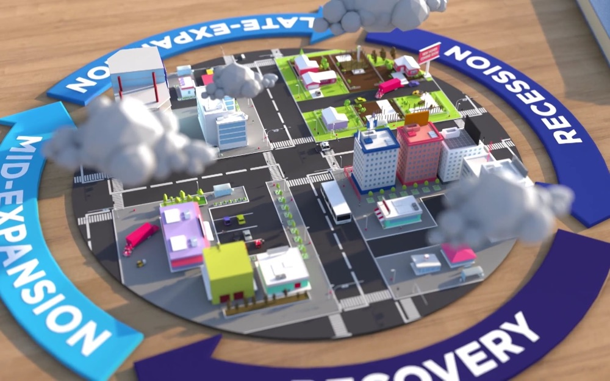
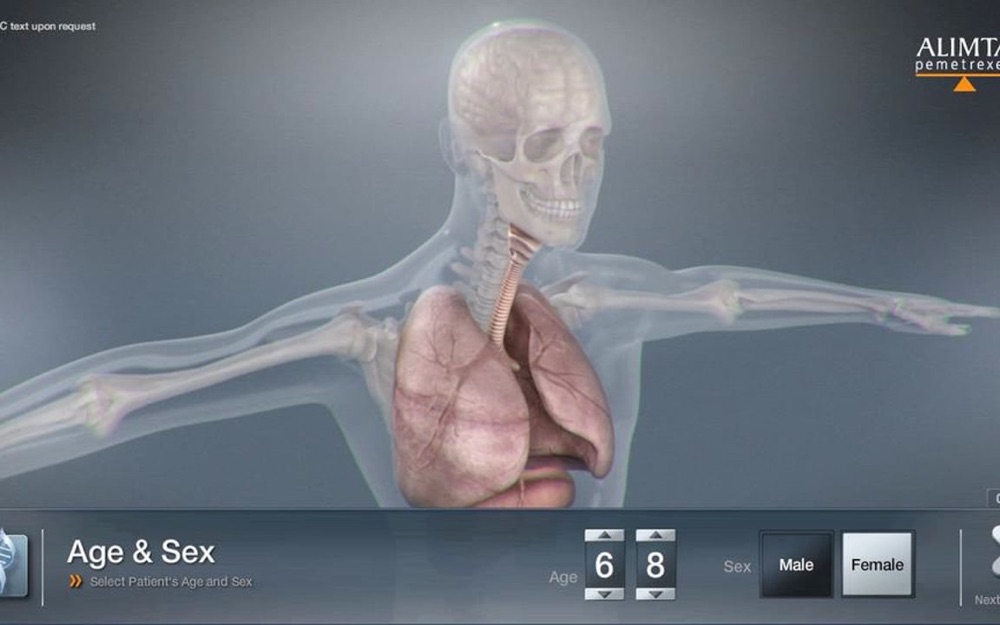
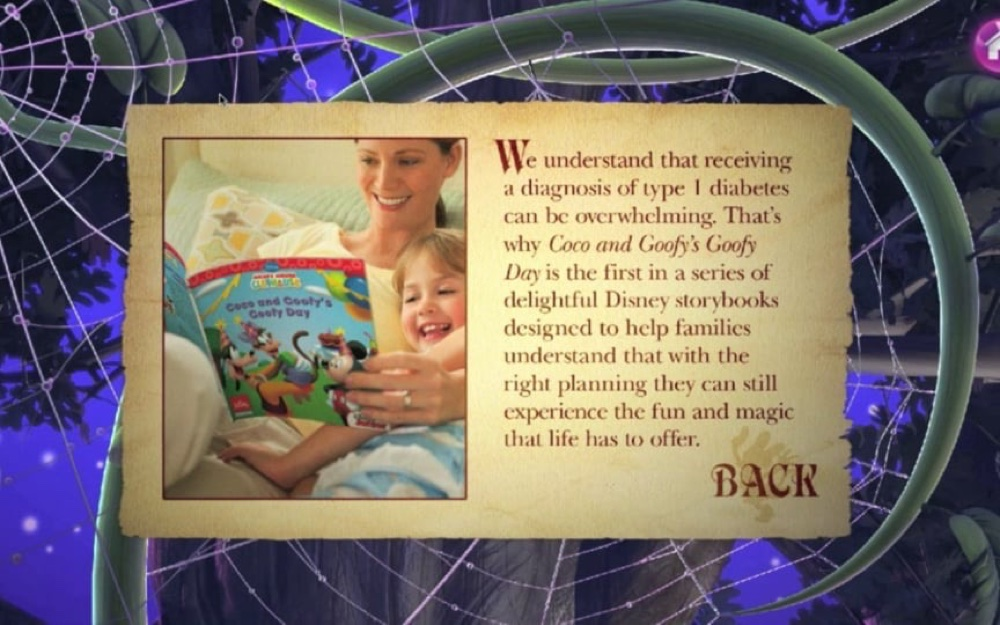
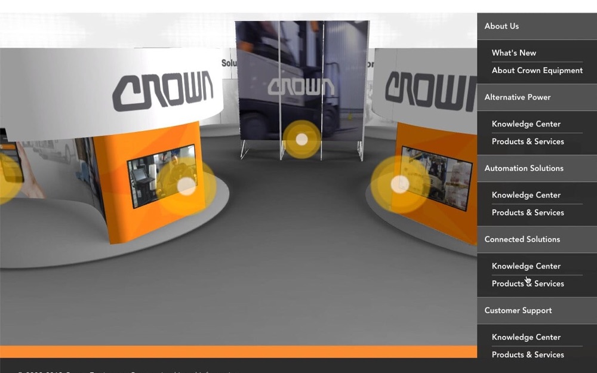

Trade show · Interactive experiences
Kiosks, virtual booths and interactive sales aids that captured leads and explained hard products on the show floor.
Trade shows compress a year of selling into three days, so the digital pieces have to do three jobs at once: stop people, explain something complex quickly, and turn the conversation into a qualified lead. These are representative.
For Emerson Climate Technologies, a kiosk packaged the entire compressor line into one experience, each product with an interactive 3D CAD model, text, video and animation. For Avery Dennison, a digital twin of the physical booth trained the sales team before the show, then went public and scored every piece of content a visitor touched to qualify them as a lead before handing them to Salesforce, with multilingual content, social sharing and live chat with sales. The Cooper Tire and Colfax pieces brought the same thinking to a tyre launch and a virtual show for fluid-handling customers who could not travel. Colfax’s Total System Optimizer took the edutainment route, letting visitors configure the kind of complex fluid-handling system found in the industrial settings where its products are used.
Ansell came back for two pieces a few years apart. The first, a kiosk, used 3D graphics and a Leap Motion tracker to read a visitor’s hand movements and walked them through the ergonomic benefits of the glove in real time, on a hand that moved with their own. The second, a tall portrait touch screen, invited people to see the difference for themselves and explore the glove technology up close. For Lilly Oncology, a touch screen let oncologists build a patient from demographic and cancer data and see how Alimta acts on the cell types in that profile. It tied video, interactive content and Veeva CRM together, and proved popular enough on the show floor that it was refined and rolled out globally to thousands of sales representatives. For Owens Corning, an interactive presentation broke the Total Protection Roofing System into three steps (seal, defend, breathe) and pulled a 3D roof apart layer by layer to show what each product does.
Archive projects
 Certified Unreal · Mammoth Lakes
Certified Unreal · Mammoth Lakes Exal Visualizer
Exal Visualizer Stryker Knee
Stryker Knee TickTracker
TickTracker CM1000 Sales Tool
CM1000 Sales Tool Nationwide Life
Nationwide Life
Nationwide Financial Yield Curve Index AR GE Healthcare
GE Healthcare
Interactive Patient Builder
Disney Diabetes Kiosk ViewingTrade Show Experiences
ViewingTrade Show Experiences
Crown Virtual Trade Show QN2A · Stand Up To Cancer
QN2A · Stand Up To Cancer